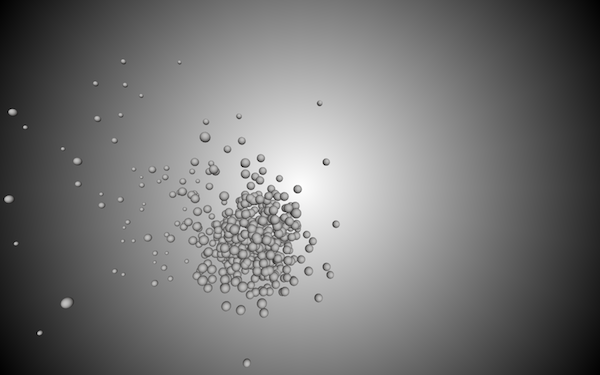
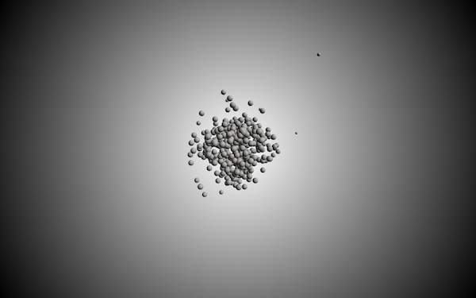

Shukatsu = Fishing
In this work I expressed what I thought through my experience of job hunting.
In Japan job hunting is known as "shukatsu". In this work "shukatsu" is compared to fishing. In a company interview, the interviewer said that job hunting is a coincidence. Companies go to seek for better students in famous private and national universities. The students apply for the recruitment, but the feelings of the students who are applying are various, someone could be decided, there are also those who are just trying.
I compared this situation to fishing. The fishing boat goes to the point where many fish are likely to catch. The fishing bait and the net is set up there. Wait for the fish to hang, then raise it if you think it hung. Underwater, some fish jump to the bait, some fish jumps after careful observation. If you extend your horizons, there will be some fish drifting all the way through the water, there will be some fish trying to rise to the ground by themselves growing their feet. Each one looks for the way to connect with society in a way that suits the best.
I perceived this situation througn my "shukatsu".
, openFrameworks

